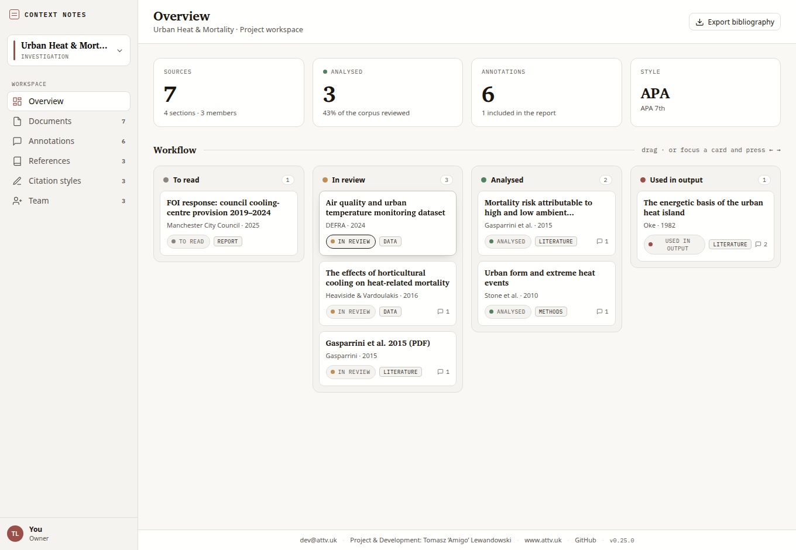

Scientific Context Notes
File web pages and PDFs into research projects, anchor notes to the exact passage, and generate real CSL citations — all locally.
Local-first
No account
No backend
Manifest V3

What it does
- Files web pages and PDFs into projects, with a reading status you can move from “to read” through to “used in output”.
- Anchors every note to the exact passage it came from — a W3C text-quote selector on a page, a page-and-rectangle anchor in a PDF — so the quote survives a reload.
- Produces real citations: APA, MLA, Chicago and Harvard through citeproc, with a rule-driven editor that shows the CSL it compiles to.
- Reads and annotates PDFs in a bundled reader; nothing is uploaded to open a document.
- Shares work as a portable snapshot file, optionally password-encrypted — collaboration by file, because there is no server to collaborate through.
Where your data lives
In this browser, in IndexedDB, and nowhere else. There is no backend, no telemetry, no account, and no remote code — every asset, from the citation styles to the PDF engine, ships inside the extension. Host access is never granted up front: the extension asks per site, the first time you annotate there. The full statement is in the privacy policy.